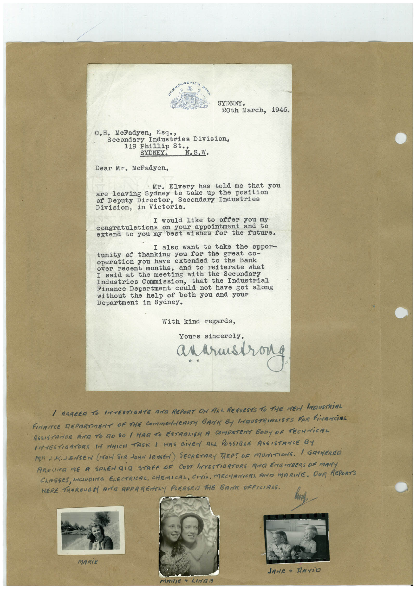

Book 1 · scan 059


Description
Transcription
Context
Review notes
Compare the machine draft with the scan. Handwriting and names need human review.
Artifacts
Edit the artifacts field in this note’s frontmatter to change these records. This summary is generated.
B01-S059-A01 — Letter, Photo & Handwritten note — Book 1, scan 059
Types: Typed document, Letter, Photo, Handwritten note
Scope: Whole scanned page; individual items can be split out during review.
Caption: Not mapped yet.
Caption source: Not recorded yet.
Caption status: unmapped
Machine transcription
SYDNEY. 20th March, 1946. C.H. McFadyen, Esq., Secondary Industries Division, 119h1114. St. St. 2.S.W. Dear Mr. McFadyen, Mr. Elvery has told me that you are leaving Sydney to take up the position of Deputy Director, Secondary Industries Division, in Victoria. I would like to offer you my congratulations on your appointment and to extend to you my best wishes for the future. I also want to take the oppor- tunity of thanking you for the great co- operation you have extended to the Bank over recent months, and to reiterate what I said at the meeting with the Secondary Industries Commission, that the Industrial Finance Department could not have got along without the help of both you and your Department in Sydney. With kind regards, Yours sincerely, anarmstrong / AGREED TO INVESTIGATE AND REPORT ON ALL REQUESTS TO THE MEN IMDUSTRIAL FINANCE REPARTMENT OF THE COmmONERKTH BANK By INMUSTRIALISTS FOR FiNANCiAL ASSISTANCE ARE TO GO SO / MAR TO ESTABLISH A COMPETENT BODY OF TECHNiCAL INTESTIGATORS IN MHICH TASK I WAS GiVEN ALL POSSIBLE ASSISTANCE BY MA J.K.L.ENSEN (HOW SIR JONN JENSEN) SECRETARY TEP! OF MUNITIONS. / GATHEREO AROUNO ME A SPLENDIA STAFF OF COST INTESTIORTORS RAG ENGINBERS OF MANY CLASSES, INCLURING ELECTRICAL, CHEMICAL, CIVIL, MECHANIAI AND MARINE. OUR REPORTS HERE THOROUGM AND APPARENTAY PLERSEN THE BANK OFFICIANS. MARiE JANE • RAViO MARIE LINAR